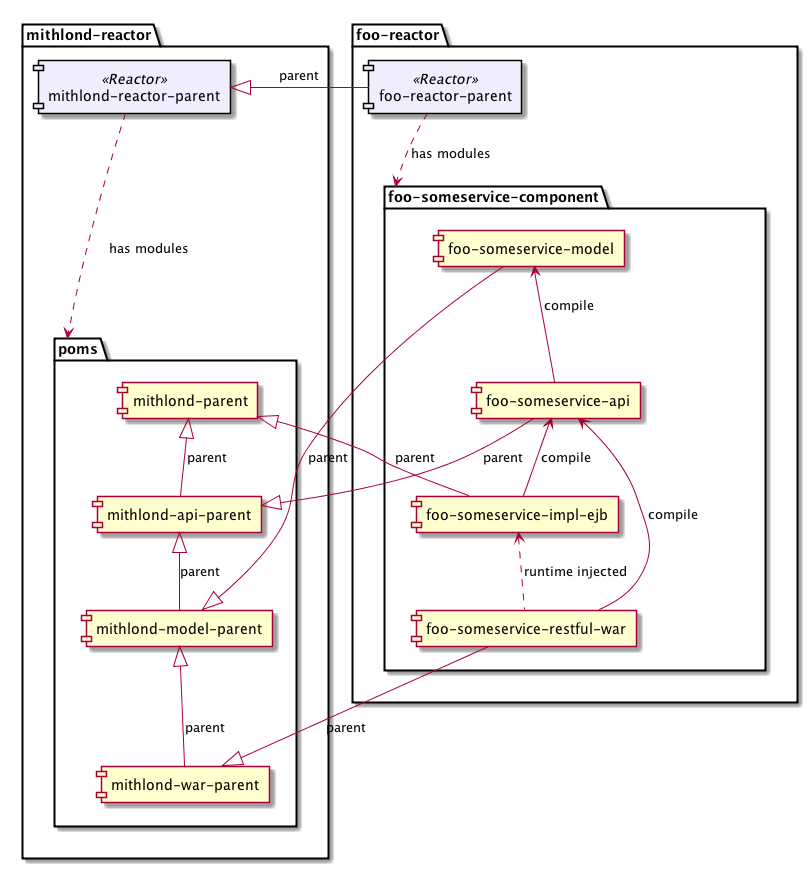

Framework concepts
Apache Maven is a project build and organisation tool, which provides considerable freedom and flexibility to structure software projects and tailor build projects. This flexibility comes with a price; project consistency can go a long way towards reducing time consumption to achieve a particular result. The Mithlond framework uses the Nazgul Tools project definition for standards in regards to codestyle, naming, build tooling, reactor structure, documentation and others to simplify and harness the flexibility of Maven in a productive way.
Maven reactor terms
Most projects consist of many logical parts (modules), which depend upon one another and are built at the same time. The mechanism in Maven which handles such multi-module builds is called reactor, and is well described on the Apache Maven website. However, the Maven flexibility frequently creates confusion regarding how to configure POMs and which attributes affect what in the build or site creation. Therefore, the framework defines a fixed set of ProjectTypes which serve to characterize module projects and apply correct validation rules against POMs and codebases.
POM project types
Maven POMs group several sets of information about projects, enabling several kinds of configuration to be mixed in a single file. While standard Maven does not separate between typical roles or stereotypes for POMs, the project enforces the difference:
-
Reactor POMs. POMs which create the build reactor, implying the build order between projects in the multi-module reactor. These POMs must not contain dependency definitions, but must contain module definitions. This implies that Reactor POMs are never leaf projects within the build reactor. Reactor POMs are only used by other Reactor POMs, which implies that no artifacts should ever use a reactor POM as parent.
-
Parent POMs. POMs which define versions and configures the Maven plugins to produce artifacts. These POMs may contain dependency management (and/or dependency) definitions, but must not contain module definitions. This implies that Parent POMs are always leaf projects within the build reactor. Artifacts and Parent POMs use Parent POMs for parent.
Parent POM structure
Parent POMs are stored within the ${topReactorDirectory}/poms directory. However, they also have a well-defined relationship to each other and the Framework parent POMs. The image below illustrates the standard parent relationships between component projects and their Parent POMs, as well as the reactors where they are defined.

As indicated, the parent POMs within the project reactor (“foo-reactor” above), are related by inheritance to the mithlond-parent reactor which defines the build structure and standard maven plugins used. Moreover, parent POMs within a project reactor must be related by direct inheritance as illustrated in the image above.
Software Component projects
The project component types used within development are described within the software components document.